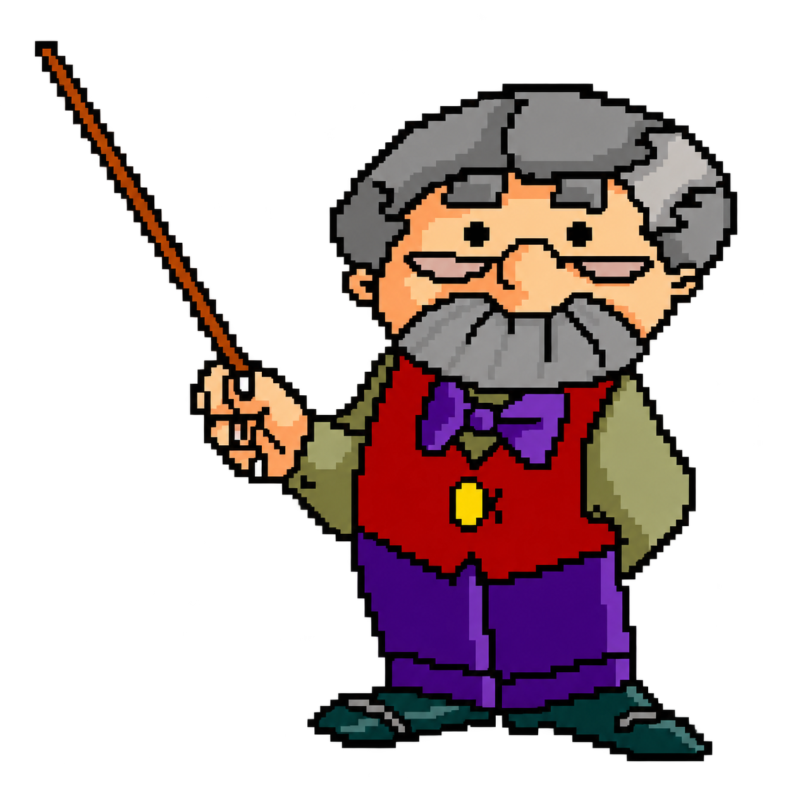

Aujourd’hui
LE POINT DU JOURChargement du point…
POUR ALLER PLUS LOIN
Une information, un éclairage.
Le PDF sourcé sera disponible avec le point du jour.
LE CARNET DE MR CAMEMBERT
Moins de 50 mots pour faire le point. Une analyse pour aller plus loin.
Chargement du point…
POUR ALLER PLUS LOIN
Le PDF sourcé sera disponible avec le point du jour.
Chargement du point…
Le PDF sourcé sera disponible avec cette édition.
Éditions datées en heure de Paris, fondées sur la journée précédente. Clôtures comparées à la séance antérieure. Brouillons à relire avant publication ; les actifs autorisés ne sont pas des positions détenues.
Chargement de l’univers…
| Actif | Ticker | Place | Type |
|---|
Source : le CSV fourni par le club. Liste d’actifs autorisés, sans indication de détention. Télécharger l’univers CSV
UN PEU DE RECUL
Choisissez une réponse pour continuer avec Mr Camembert.
Bonjour ! Moi, c’est Mr Camembert.
